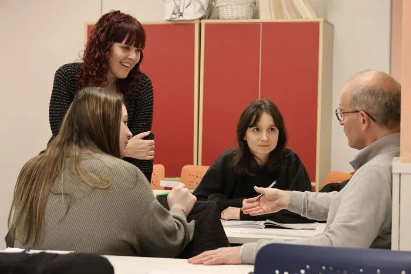
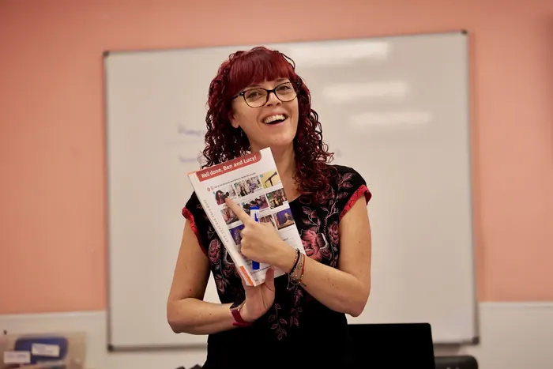
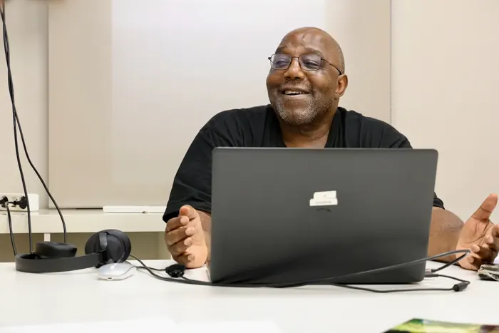

L'anglès que s'adapta a tu
Aprèn anglès amb classes presencials en grups reduïts, adaptades al teu nivell i als teus objectius. Oferim cursos d'anglès general, classes de conversa i de preparació d'exàmens oficials, amb horaris de matí i tarda.
Què vols aconseguir amb el teu anglès?
Tant si vols començar a aprendre anglès com perfeccionar els teus coneixements, a Sprint Idiomes t'oferim diferents opcions formatives segons els teus objectius.
Anglès general
Classes regulars d'anglès per aprendre des de zero, reprendre l'idioma o continuar perfeccionant-lo.
Treballem la comprensió i l'expressió oral i escrita amb activitats pràctiques adaptades a cada nivell. L'objectiu és consolidar els coneixements i comunicar-se en anglès amb més confiança i autonomia.
Nivells del curs
Nivells disponibles: A1 Inicial, A2 Elemental, B1 Intermedi, B2 Intermedi alt, C1 Avançat.
Veure els horaris →Classes de conversa
Classes enfocades a la pràctica de l'anglès oral, pensades per a persones que volen guanyar fluïdesa a l'hora de comunicar-se.
A través de converses, debats i activitats sobre temes diversos, ampliem el vocabulari i millorem l'expressió i la comprensió oral.
7Per afavorir la participació de tothom, els grups són d'un màxim de 7 persones.
Nivells del curs
Nivells disponibles: B1 Intermedi, B2 Intermedi alt, C1 Avançat.
Veure els horaris →Preparació Cambridge
Cursos de preparació per als exàmens oficials de Cambridge, específicament per a adults.
Treballem les diferents parts de l'examen (Reading, Writing, Listening, Speaking i Use of English), combinant activitats de preparació, simulacres d'examen i estratègies adaptades a cada certificat.
A més, us orientem sobre les convocatòries i gestionem la inscripció a l'examen oficial si ho desitgeu.
Nivells del curs
Nivells disponibles: B2 First, C1 Advanced.
Més sobre la preparació Cambridge → Veure els horaris →Saps quin és el teu nivell d'anglès?
Descobreix quin nivell s'adapta millor als teus coneixements amb la nostra prova de nivell, gratuïta i sense compromís.
Prova de nivell gratuïta i sense compromís, de l'A1 al C1.
Demana la prova de nivell gratuïta →Where are you going (espai en blanc)Friday?
Així són les nostres classes
Grups reduïts, de matí i de tarda.



Troba l'horari que millor s'adapta a tu
Consulta els horaris dels nostres cursos d'anglès per a adults. Disposem de grups de matí i tarda, amb diferents opcions segons el nivell i la tipologia de curs.
Tria el tipus de curs · clica cada pestanya per veure els seus horaris
| Nivell | Dies | Hora |
|---|---|---|
| A1 Elementary | Dilluns i dimecres | 9:30–11:00 |
| A1 Elementary | Dilluns i dimecres | 18:30–20:30 |
| A1 Elementary | Dimarts i dijous | 18:15–19:45 |
| A2 Pre-intermediate | Dilluns i dimecres | 11:00–12:30 |
| A2 Pre-intermediate | Dimarts i dijous | 18:30–20:00 |
| B1.1 Intermediate 1 | Dimarts i dijous | 9:30–11:00 |
| B1.1 Intermediate 1 | Dimarts i dijous | 19:15–20:45 |
| B1.2 Intermediate 2 | Dimarts i dijous | 19:15–20:45 |
| B2 Upper-intermediate | Dilluns i dimecres | 20:00–21:30 |
| B2 Upper-intermediate | Dimarts i dijous | 11:00–12:30 |
No saps quin és el teu nivell?Fes la prova i t'ajudarem a triar el grup.
Demana la prova de nivell gratuïta →| Nivell | Dies | Hora |
|---|---|---|
| Conversa B1 | Dimecres | 18:30–20:00 |
| Conversa B1 | Dijous | 9:30–11:00 |
| Conversa B2 | Dilluns | 18:30–20:00 |
| Conversa B2 | Dimecres | 18:30–20:00 |
| Conversa B2 | Dijous | 11:00–12:30 |
| Conversa C1 | Dilluns | 18:30–20:00 |
No saps quin és el teu nivell?Fes la prova i t'ajudarem a triar el grup.
Demana la prova de nivell gratuïta →| Nivell | Dies | Hora |
|---|---|---|
| First B2 | Dilluns i dimecres | 11:00–12:30 |
| First B2 | Dilluns i dimecres | 19:30–21:00 |
| Advanced C1 | Dilluns i dimecres | 9:30–11:00 |
No saps quin és el teu nivell?Fes la prova i t'ajudarem a triar el grup.
Demana la prova de nivell gratuïta →
La primera classe és gratuïta
Fes la prova de nivell i prova una classe, sense compromís